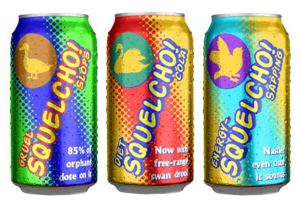

Friday, September the 11th, 2009
back to: title, date or indexes
Astute reader Roland Clare reminds me that the soft drink sloshed all over the canteen table by the narrator of Impugned By A Peasant was the subject of an Andy Warhol painting.

Three Cans Of Squelcho! (1966) recently fetched untold billions of dollars at auction. The buyer remained anonymous, though the word on the street* suggests the picture now hangs in the foetid lair of the Grunty Man, up in the hills. The Grunty Man has been a keen art collector for some centuries. If you look very, very carefully, you can spot him at the back of the auction scene in North By Northwest, where Roger O Thornhill (Cary Grant) confronts Philip Vandamm (James Mason) and causes a kerfuffle.
* NOTE : Blister Lane, apparently.